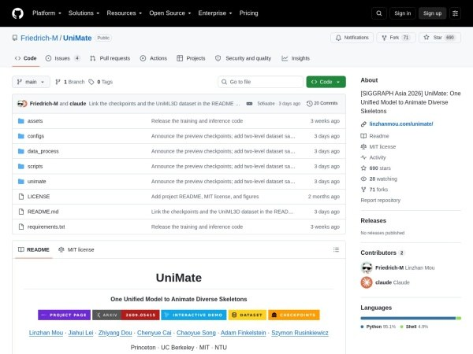

01
3D 動作／Rig：UniMate:…多様3D生成AI！ 的製作重點
這則內容主要談 Rigging（UniMate:…多様3D生成AI！），與 Rigging 的製作實作直接相關。它能提供具體方法或結果作為對照，但仍要區分哪些是可複用流程、哪些只成立於單一作品或特定專案條件。

綁定 ★★★★☆
完整分析
技術／流程變更
內容重點落在 Rigging（UniMate:…多様3D生成AI！），並涉及 Rigging。先辨認文章實際展示的是方法、工具能力還是單一作品結果，才能避免把展示效果誤當成可直接複製的流程。
Production 影響
對 Rigging，可以把 Rigging（UniMate:…多様3D生成AI！） 的做法或結果對照目前 pipeline，找出它可能影響的操作、交接或品質檢查點；只有能對應到真實工作步驟的部分，才值得進一步投入測試。
導入測試與限制
Rigging（UniMate:…多様3D生成AI！） 目前只有單一來源可供參考，通常不足以證明跨專案穩定性；若要正式導入，仍需補做版本、資產規模與輸出條件的驗證。
BRIEF｜來源已驗證；證據深度較有限，完整分析會明確區分已知資訊與待驗證事項。